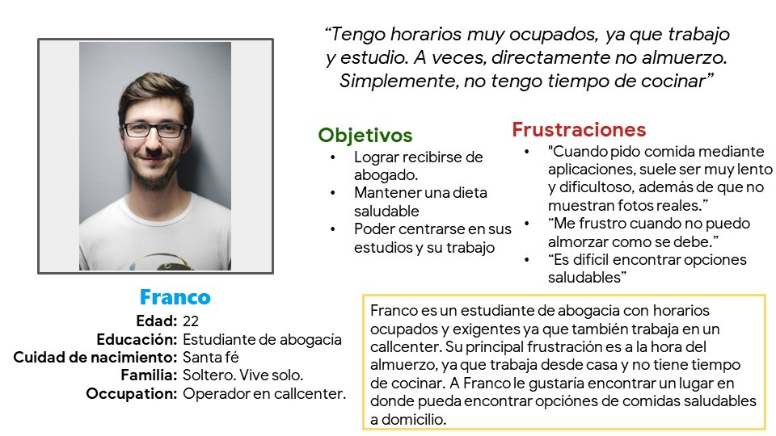
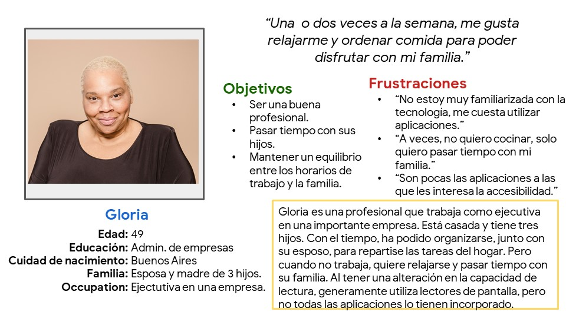
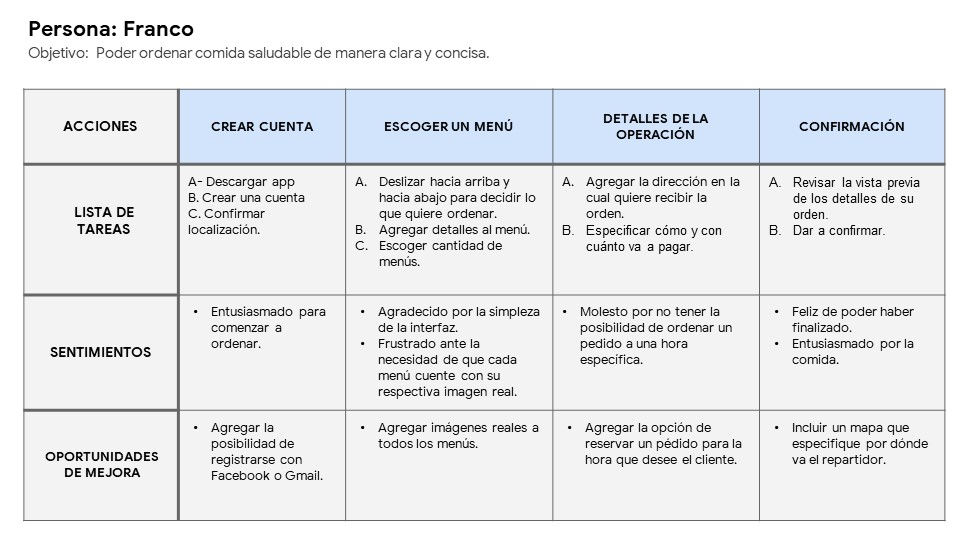

Investigación de usuarios (user research) : resumen
Realicé entrevistas y cree mapas de empatía (empathy maps) para poder comprender las necesidades de los usuarios para los que estaba diseñanando. Un grupo de usuarios primario identificados a través de la investigación, eran jóvenes adultos que trabajaban y no tenían tiempo para cocinar. Este grupo de usuarios confirmó las suposiciones que iniciales sobre los clientes de este restaurante, pero la investigación también reveló que el tiempo no era el único factor que limitaba la acción de cocinar. Otros problemas de los usuarios incluían obligaciones y quehaceres en sus hogares, dificultad a la hora de conseguir ingredientes para sus comidas, e imposibilidad para ir al restaurante a comer en persona.
Ingresar a mi preparación para la entrevista para ver los objetivos, preguntas y características de los participantes objetivos
Investigación de usuarios: puntos de dolor (pain points)
Tiempo
Los jóvenes y adultos que trabajan se encuentran muy ocupados para gastar tiempo en la preparación de comidas.
Plataforma
Las plataformas para pedir comida suelen no ser lo demasiado claras y consisas para permitir el acceso a personas que no están demasiado familiarizadas con la tecnología.
Accesibilidad
Las aplicaciones suelen no estar estar equipadas con técnologia de asistencia.
Persona: Franco
Planteamiento del problema: Franco es un estudiante y operador de callcenter que quiere pedir comida saludable en una aplicación rápida, clara y consisa porque no tiene tiempo para cocinar durante el almuerzo.
Persona: Gloria
Planteamiento del problema: Gloria es una ejecutiva, esposa y madre de tres hijos que necesita ordenar comida de forma rápida, amigable y accesible, porque quiere relajarse en sus días libres y compartir una cena con su familia.
Mapa de viaje (journey map)

Propuestas de valor (value propositions)
Diseño de aplicación fácil de usar - Interfaz clara, concisa y amigable - Filtros de búsqueda para los diferentes menús - Pagos con un click - Seguimiento de los pedidos - Imágenes reales de todos los productos - Opciones saludables - Accesible - Chat directo con un representante.
Auditoría competitiva e informe (competitive audit and report)

Podrás visualizar el Informe que realicé para presentar esta Auditoría ingresando aquí .
Declaración de objetivos (Goal statement)
Esta aplicación de comida por encargo/delivery permitirá a los usuarios ordenar comida por reparto, lo que afectará a aquellos estudiantes, trabajadores y familias que no pueden o no desean cocinar, al permitirles una manera de ordenar rápida y fácil. Se medirá la eficacua leyendo opiniones de los usuarios.
Esta página aún no está terminada. La misma fue creada para demostrar mis conocimientos en HTML & CSS. Por favor, para ver mas de mi trabajo, te invito a visitar mi portfolio en Behance.